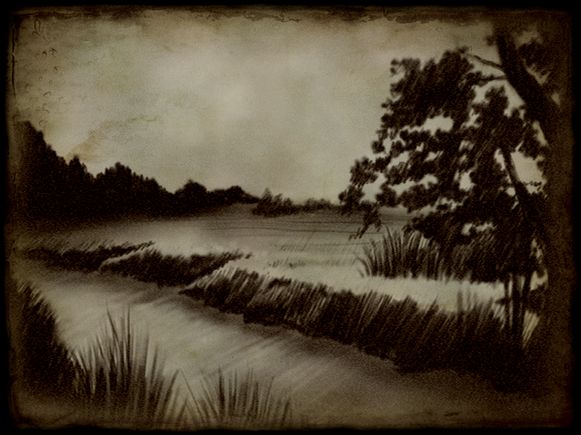

여명
여명
 |
까마득한 시간 절대자가 존재하였다. 절대자는 자신의 손으로 여러 신들을 만들어
내었다. 그들은 절대자에게서 받은 능력으로 많은 생물들과 드만을 창조하였다. 그리고, 그들의 형상을 따라 인간들을 만들었다.
그들은 곧 자연을 이용해가기 시작 하였고 온 드만에 번성하였다. 그들이 그들의
문명을 완성해갈 즈음 그들의 평화로운 삶에 싫증을 느꼈다. 신들에게서 부여받은 탁월한 적응력은 인간들로 하여금 지배하는 즐거움을 알게
하였고 그들은 약한 생물들을 지배하기 시작했다. 그리고 그들은 급기야 서로를 지배하기 위해 전쟁을 벌였다. 서로를 죽였으며 서로를 상하게
하였다. |
|
이런 인간들을 두고 신들은 고민에 빠졌다. 어떤 신들은 그들이 지칠때까지 그대로 두자는 신들도 있었고 어떤 신들은 그들을
멸하자고 하였다.그러던 중, 뜻하지 않던 일이 발생하였다.
그러던 중, 창조의 신 바라의 아들인 꿈의 신 할롬은 자신의 꿈으로 드래곤이라는 생물을 만들어내었다. 드래곤들은 명석했으며 강한 힘을 소유하였었다. 수많은 드래곤들이 바라와 할놈에 의해 창조되었고 그들은 곧 갈까돌들의 좋은 적수가 되었다. 많은 드래곤들과 갈가돌들이 생명을 잃어갔고 수많은 드래곤들의 희생 앞에 바라와 누마가 이끄는 신들은 하라스를 죄어가기 시작하였다. 결국 하라스는 할롬과 그의 화이트 드래곤에 의해 무너지고 말았다. 신들의 전쟁이 끝나고 많은 신들이 유배당하거나 드만을 떠나갔다. 그리고 하라스는 드만의 깊은 곳에 봉인되었다. 신들의 전쟁에서 승리한 신들은 그제서야 인간들과 드만을 돌아보았다. 수많은 인간들과 생명들이 신들의 전쟁에서 목숨을 잃었다. 드마은 황폐해질대로 황폐해졌다. 신들은 그런 인간들을 불쌍히 여겼다. 그들은 더이상 드만의 역사에 개입하지 않기로 하였다. 그들은 모두 드만을 떠났고 드만은 생물들과 인간들에게 맡겨졌다. |
|
|
Copyright ⓒ 2000 ABALON STUDIO All Rights Reserved. |